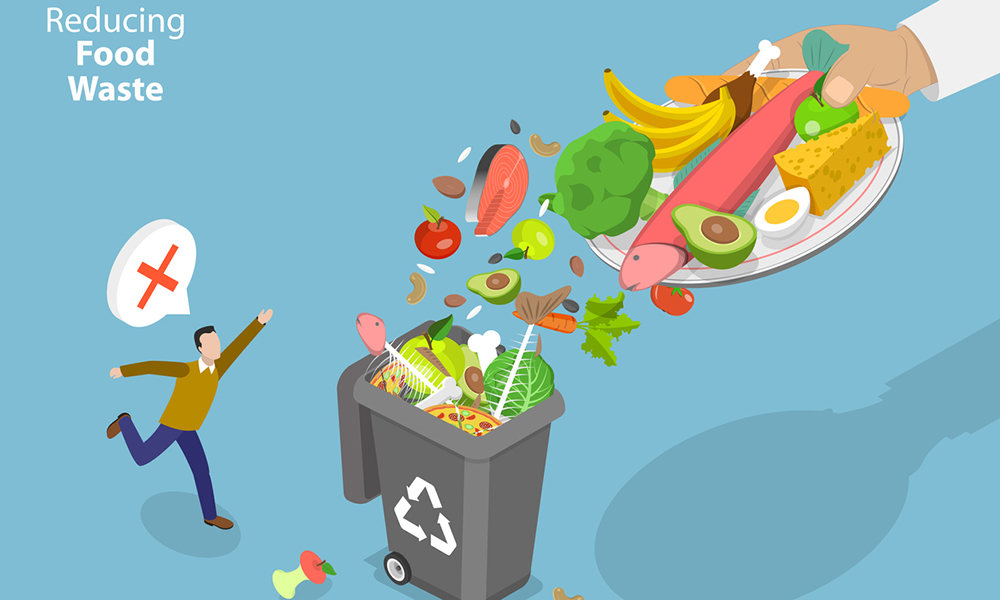

Committed to building a
healthier, more sustainable
future by reducing food waste.

Solving the dumbest problem
#FoodWaste

Around 1.3 billion
tonnes of food is
being wasted
globally.
One-third of all
food in India goes
to waste, as
reported by FSSAI.
It is the culprit
behind 8-10% of
global greenhouse
gas emissions.
Food worth Rs
92,000 crore goes
down the drain
every year.
Join Us in Reducing Food Waste
Still think it's not an issue? Click below to dwell into the repercussions of food wastage
Learn More